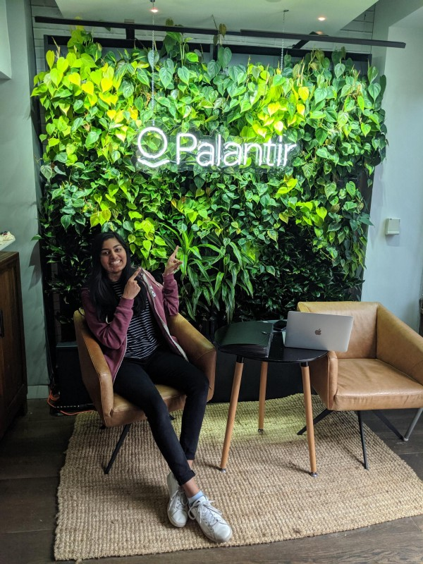

Working across the pond

This summer was filled with unknowns.
London, a city I knew no one in, on a continent in which I’d never left an airport. Palantir, where I’d intern as a forward deployed software engineer — I knew it’d be something different, but not exactly how.
These unknowns led to quite a bit of discovery. I was able to reflect on my place in the world and interface with people of all kinds of backgrounds and attitudes on life, careers, and politics. I became a better conversationalist and a more aware individual.
At Palantir, I explored aspects of my skillset I hadn’t before exercised so strongly in a work environment. I was able to layer my technical skills with my ability to synthesize, design and present solutions. I approached broader problems, worked across teams to understand and deploy necessary software, and felt a larger sense of ownership, responsibility, and impact.
Above all, I loved working with the people and felt empowered to make decisions. Major thanks to Steve Basher, Chloe Lathe, and Kristine Snyder for helping me be successful this summer, and the numerous others with whom I worked with for making me feel welcome. 🙂
—